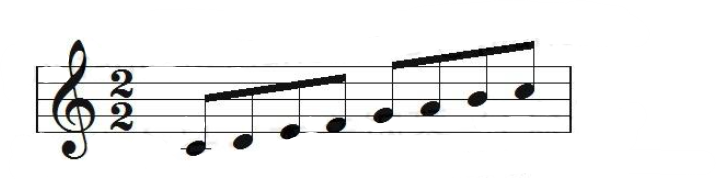
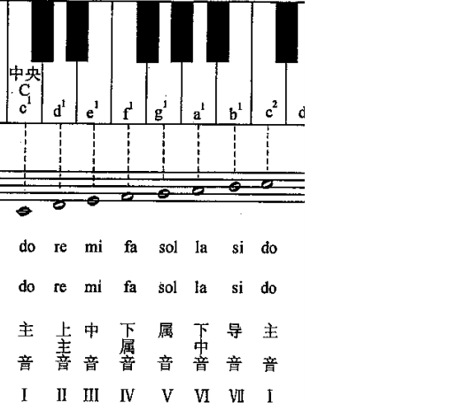

沿着音阶相邻移动，旋律通常平稳，容易形成清楚的方向。
把音程排成方向
音阶是按照一定音程关系排列起来的一组音。它为旋律提供音高材料，也为和弦建立调性坐标。
01
从 C 大调开始
C 大调由 C、D、E、F、G、A、B 七个基本音组成。相邻音之间的全音与半音关系是：全音、全音、半音、全音、全音、全音、半音。
从低音 C 逐级走到高音 C，可以听见音高连续上行的方向。

尝试对照着上面的谱写出来吧，暂时把一格当作一个十六分音符。
尝试写一条音阶
先填充 C 大调音阶示例，再修改格子，观察音高方向如何改变听感。
BPM
点击“填充示例”载入 C 大调上行音阶，每个音占两格；点击格子添加音，长按并横向拖动可延长音。
在这个音轨中你可以很清晰的看到音阶的走向和距离。我们以C大调音阶为例，讲一讲这些音高的属性和它们在旋律中的作用。
02
从音阶走向旋律
音阶不是必须逐级播放的练习，它更像一组可选择的音高。跳过某些级数、改变起点或重复一个音，就能从音阶材料中写出不同的旋律。
按照顺序，我们依次将它们称为：主音、上主音、中音、下属音、属音、下中音、导音、主音。为什么会有这样的命名呢？这是因为每个音在旋律中承担的功能不同，主音是旋律的中心，上主音和中音起到连接作用，下属音和属音则带有一定的张力，导音具有引导回主音的作用。
下面这张图展示其对应关系。

你可以在上方的音轨中听一听各个音高的导向性，感受它们在旋律中所起的作用。你需要特别注意的是，主音、下属音和属音，这个在后面的和弦连接中有很重要的应用。